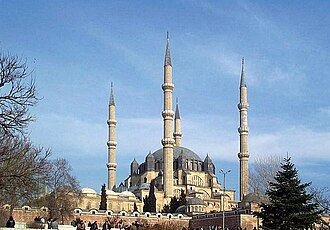

概要
La mosquée Selimiye est une mosquée située à Edirne, en Turquie. Elle a été commandée par le sultan Selim II, imaginée par l'architecte Sinan et construite entre 1568 et 1574. Elle est considérée comme son chef-d'œuvre, ainsi que l'un des chefs-d'œuvre de l'architecture islamique et ottomane. Elle est d'ailleurs inscrite au Patrimoine mondial en tant que bien culturel depuis 2011.
جامع السليمية هو جامع يقع في مدينة أدرنة في تركيا التي كانت عاصمة الدولة العثمانية قبل فتح القسطنطينية. أنشأ الجامع السلطان سليم الثاني ونفذ بناؤه المعماري العثماني الأشهر سنان آغا عام 1575م، ويعتبره البعض أعظم أعماله المعمارية.
The Selimiye Mosque is an Ottoman imperial mosque, located in the city of Edirne, Turkey. It was commissioned by Sultan Selim II and was built by the imperial architect Mimar Sinan between 1568 and 1575. It was considered by Sinan to be his masterpiece and is one of the highest achievements of Islamic architecture as a whole and Ottoman architecture in particular. The mosque, together with its külliye, was included on UNESCO's World Heritage List in 2011.
Selimiye Camii, Osmanlı padişahı II. Selim döneminde Mimar Sinan'ın yaptığı ve Osmanlı'nın önceki başkenti Edirne'de bulunan bir külliyedir. Mimar Sinan'ın 80 yaşında yaptığı ve "ustalık eserim" şeklinde nitelendirdiği Selimiye Camii, gerek Mimar Sinan'ın, gerek Osmanlı mimarisinin en önemli eserleri arasındadır.
Masjid Selim Edirne atau yang lebih dikenal dengan Kompleks Masjid Edirne adalah sebuah kompleks masjid peninggalan Kesultanan Utsmaniyah yang berada di kota Edirne, Provinsi Edirne, Turki. Masjid ini awalnya dibangun pada tahun 1568, atas perintah Sultan Selim II, dan diarsiteki oleh Mimar Sinan. Kemudian masjid ini juga digambarkan pada sisi depan uang kertas pecahan 10.000 lira Turki edisi tahun 1982–1995. Bangunan masjid ini ditetapkan sebagai Situs Warisan Dunia UNESCO pada tahun 2011.
سلیمیہ مسجد ترکی کے شہر ادرنہ کی ایک مسجد ہے۔ یہ مسجد عثمانی سلطان سلیم دوم کے حکم پر تعمیر کی گئی اور اسے مشہور معمار سنان پاشا نے 1568ء سے 1574ء کے درمیان تعمیر کیا۔ اسے سنان پاشا کے فن کا عظیم ترین شاہکار اور اسلامی طرز تعمیر کا شاندار نمونہ سمجھا جاتا ہے۔ اس مسجد کے مینار ترکی کے بلند ترین مینار ہیں جن کی بلندی 70.9 میٹر ہیں۔ یہ جامع مسجد ایک کلیہ کے مرکز میں قائم ہے جو ایک مدرسہ، دار الحدیث اور ایک آراستہ کے درمیان واقع ہے۔ اس میں ایک تاریخی شفا خانہ بھی واقع ہے جسے اب عجائب گھر بنا دیا گیا ہے۔ سنان نے مسجد کا طرز تعمیر ایسا رکھا کہ مسجد کے ہر کونے سے محراب صاف دکھائی دے۔ اس مسجد میں روایتی عثمانی طرز تعمیر کے حامل چار خوبصورت مینار بھی شامل ہیں جبکہ ایک عظیم گنبد پر اس پر موجود ہے۔ مسجد کے گرد کتب خانے، مدرسہ، حمام، لنگر خانہ، بازار، شفا خانہ کے علاوہ ایک قبرستان بھی قائم کیا گیا تھا۔ 1915ء میں بلغاریہ کی جانب سے ادرنہ کے محاصرے کے موقع پر مسجد کا گنبد بلغاری توپ خانے کی زد میں آ گ
Die Selimiye-Moschee ist eine Moschee in der türkischen Stadt Edirne. Das Bauwerk gilt als Höhepunkt der osmanischen Architektur.
La mezquita de Selim es una mezquita musulmana, de época otomana, erigida en 1569-1575 en la ciudad de Edirne, Turquía. Es un ejemplo destacado de la arquitectura otomana clásica.
La moschea Selimiye è una moschea ottomana della città di Edirne in Turchia. Essa venne commissionata dal sultano Selim II e costruita dall'architetto Mimar Sinan fra il 1568 ed il 1574. Fu considerata da Sinan il suo capolavoro e uno dei più elevati esempi di architettura ottomana.
A Mesquita de Selim é uma mesquita otomana situada na cidade de Edirne, na Turquia. Construída ente 1568 e 1574, é usualmente apontada como a obra-prima do arquiteto imperial otomano Mimar Sinan.
De Selimiye-moskee is de grootste moskee en het opvallendste gebouw in de Turkse stad Edirne. De moskee werd gebouwd tussen 1568 en 1574 en werd ontworpen door de architect Sinan in opdracht van de Ottomaanse sultan Selim II.
塞利米耶清真寺 是土耳其埃迪爾內的一座鄂圖曼帝國時代清真寺。蘇丹塞利姆二世下令興建，於1569年至1575年間動工，建築師是科查·米馬爾·希南，被視為希南的傑作。
セリミエ・モスク はオスマン帝国時代に建設されたモスクの1つで、トルコのエディルネにある。皇帝セリム2世の命で、建築家ミマール・スィナンが1568年から1574年に建設した。スィナン自身が最高作としており、イスラーム建築の最高到達点の1つとされている。
셀리미예 모스크(튀르키예어: Selimiye Camii)는 오스만 제국 시대에 건설된 모스크 중 하나로, 터키 에디르네에 있다. 황제 셀림 2세의 명으로 건축가 미마르 시난이 1568년부터 1574년에 건설했다.
Мечеть Сели́мие — турецкая мечеть, расположенная в городе Эдирне и внесённая ЮНЕСКО в список Всемирного наследия.
Nhà thờ Hồi giáo Selimiye là một nhà thờ Hồi giáo mang phong cách kiến trúc của đế chế Ottoman nằm ở ở thành phố Edirne, Thổ Nhĩ Kỳ. Người cho xây dựng là sultan Selim II và được xây dựng bởi kiến trúc sư Mimar Sinan giữa năm 1569 và 1575. Nó là kiệt tác của Sinan và là một trong những thành tựu nổi bật nhất của kiến trúc Hồi giáo.
มัสยิดเซลีมีเย เป็นมัสยิดออตโตมันตั้งอยู่ที่เอดีร์แนในตุรกี เป็นมัสยิดที่สร้างโดยสุลต่านเซลิมที่ 2 ที่สร้างเสร็จในปี ค.ศ. 1574 เป็นสถาปัตยกรรมแบบอิสลามโดยมีมีมาร์ ซินัน เป็นสถาปนิก มัสยิดเซลิมถือว่าเป็นงานชิ้นเอกของซินันและของสถาปัตยกรรมอิสลาม
Selimiyemoskén i Edirne i Turkiet ritades av den osmanske arkitekten Mimar Sinan och uppfördes mellan år 1568 och 1574. Moskén byggdes för Süleyman I:s son och efterträdare Selim II. Sinan såg den själv som sitt mästerverk och den anses som ett av de finaste arkitektoniska verken från det osmanska rikets storhetstid.
Moscheea Selimiye este o moschee otomană situată în Edirne, Turcia. Moscheea a fost construită între anii 1569 și 1575 de către arhitectul Mimar Sinan, la cerința sultanului Selim al II-lea.
地図上の位置
資料とリンク
- Wikipédia — Français
- Wikipédia — العربية
- Wikipédia — English
- Wikipédia — Türkçe
- Wikipédia — Bahasa Indonesia
- Wikipédia — اردو
- Wikipédia — Deutsch
- Wikipédia — Español
- Wikipédia — Italiano
- Wikipédia — Português
- Wikipédia — Nederlands
- Wikipédia — 中文
- Wikipédia — 日本語
- Wikipédia — 한국어
- Wikipédia — Русский
- Wikipédia — Tiếng Việt
- Wikipédia — ไทย
- Wikipédia — Svenska
- Wikipédia — Română
- Wikidata — Q184534
データ：ウィキデータ（CC0）、3か月ごとに更新。年は、その建物について知られている最も古い建設年です。のちにモスクになった建物（アヤソフィアなど）の場合は、元の建物の建設年です。写真：ウィキメディア・コモンズ。作者とライセンスは各写真のページにあります。